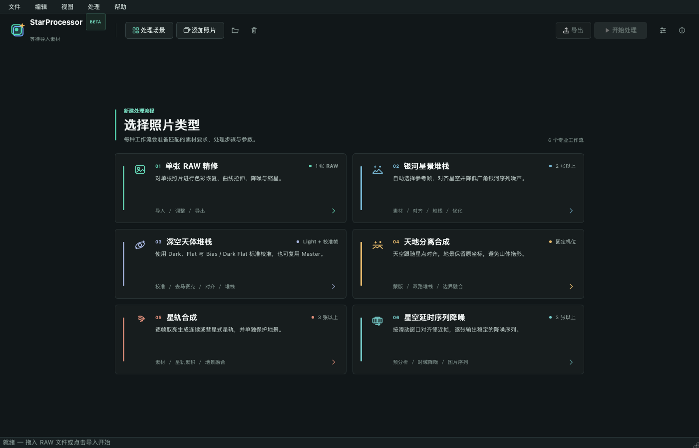

WIN
推荐
Windows
Windows 10 / 11 · x64 便携版

01 / DOWNLOAD
安装包由项目服务器直接提供，并与应用内自动更新使用同一份 SHA-256 清单。
Windows 10 / 11 · x64 便携版
macOS 14+ · Apple Silicon
当前版本
v0.10.1修复 Windows 更新包保存问题，并让更新网络遵循系统代理配置。
星空对齐、堆栈降噪与固定地景融合。
Light、Dark、Flat、Bias 与可复用 Master。
降噪、曲线、色彩、缩星和 16-bit TIFF。
02 / WORKSPACE
六类工作流分别准备素材要求和处理步骤，让第一次使用也能找到入口。